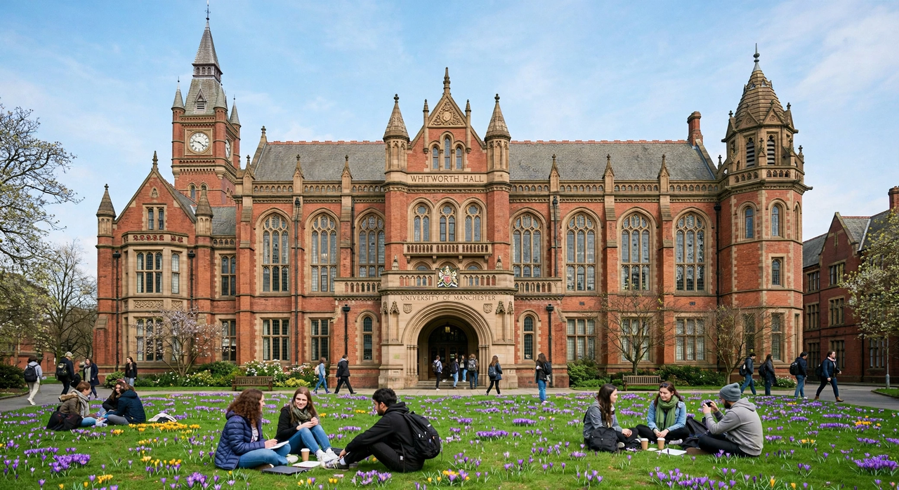

| University of Manchester | |
|---|---|
| Motto | Cognitio, sapientia, humanitas (Knowledge, wisdom, humanity) |
| Established | 2004 (merger); origins in 1824 |
| Type | Public research university |
| Location | Manchester, England |
| Students | c. 46,000 |
| Group | Russell Group; N8 Group |
| Colours | Purple and yellow |

The University of Manchester is a public research university in Manchester, England. It was formed in 2004 by the merger of the Victoria University of Manchester (founded as Owens College in 1851) and the University of Manchester Institute of Science and Technology (UMIST, founded in 1824 as the Manchester Mechanics' Institute). The main campus is south of Manchester city centre on Oxford Road.
The university is a member of the Russell Group of research-intensive British universities. It has a long association with the industrial and scientific history of Manchester: Ernest Rutherford split the atom here in 1917, the world's first stored-program computer (the Manchester Baby) ran here in 1948, and graphene was first isolated at the university in 2004 by Andre Geim and Konstantin Novoselov, who shared the 2010 Nobel Prize in Physics.
Owens College was founded in 1851 with a bequest from the textile merchant John Owens and became the first constituent college of the federal Victoria University in 1880. The Municipal School of Technology, later UMIST, grew from the Mechanics' Institute of 1824. The two institutions worked alongside each other for over a century before formally merging on 22 October 2004, inaugurated by Queen Elizabeth II.
The university is organised into three faculties: Biology, Medicine and Health; Science and Engineering; and Humanities. It operates major research facilities including the Jodrell Bank Observatory in Cheshire, home of the Lovell Telescope, and the National Graphene Institute. The university counts 25 Nobel laureates among its past and present staff and students, among them Rutherford, Niels Bohr's collaborator James Chadwick, and the economist Arthur Lewis.
Landmarks on the Oxford Road campus include the Gothic Revival Whitworth Hall, the Manchester Museum, and the Whitworth Art Gallery. The students' union on Oxford Road is one of the largest in the UK, and the Manchester Academy venues next door are longstanding fixtures of the city's music scene.